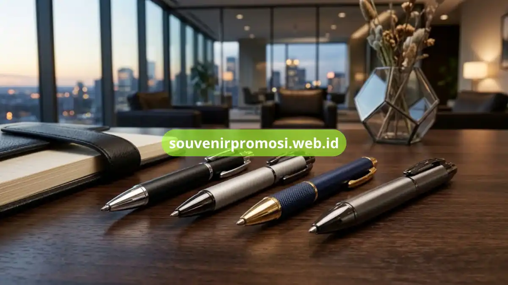

Spesifikasi pulpen besi promosi mencakup jenis logam pada body, mekanisme klip, jenis tinta, dan teknik cetak logo yang digunakan. Ketiga komponen ini menentukan tampilan akhir, daya tahan, serta kesan yang diterima penerima souvenir.
Memahami spesifikasi ini membantu perusahaan memilih model yang paling sesuai dengan kebutuhan branding dan anggaran.
Poin Penting
- Body pulpen besi umumnya menggunakan logam alloy atau stainless dengan lapisan pelapis warna.
- Mekanisme klip tersedia dalam versi magnet atau versi putar konvensional.
- Teknik cetak logo utama adalah laser engraving dan UV printing.
- Jenis tinta bervariasi antara smooth writing dan quick-dry.
- Spesifikasi premium biasanya menyertakan kemasan gift box tambahan.
Daftar Isi
Material Body Pulpen Besi Apa Saja yang Tersedia di Katalog?
Material body pulpen besi promosi umumnya menggunakan campuran logam alloy dengan lapisan chrome, gunmetal, atau gold matte sesuai preferensi korporat. Lapisan pelapis ini berfungsi memberikan warna akhir sekaligus melindungi permukaan logam dari goresan ringan saat digunakan sehari-hari.
Selain lapisan warna standar, beberapa model menawarkan finishing matte atau glossy yang memengaruhi tampilan akhir logo saat dicetak di atas permukaannya. Pemilihan finishing ini biasanya disesuaikan dengan identitas visual brand agar hasil akhir selaras dengan warna korporat perusahaan.
Bagaimana Mekanisme Klip pada Pulpen Besi Bekerja?
Mekanisme klip pada pulpen besi promosi umumnya tersedia dalam dua jenis, yaitu klip magnet dan klip model putar konvensional. Klip magnet menempel secara otomatis pada saku kemeja tanpa perlu tekanan, sehingga terasa lebih praktis dan modern saat digunakan oleh eksekutif maupun tamu undangan formal.
Sementara itu, klip model putar konvensional menggunakan sistem ulir pada bagian tutup, cocok untuk model pulpen dengan desain lebih klasik dan solid.

Jenis Tinta Apa yang Digunakan pada Pulpen Besi Promosi?
Jenis tinta pada pulpen besi promosi umumnya berupa tinta smooth writing yang dirancang untuk kenyamanan menulis dalam waktu lama, cocok untuk kebutuhan tanda tangan dokumen maupun catatan meeting.
Beberapa varian juga menyediakan tinta quick-dry yang cepat mengering di atas kertas, mengurangi risiko noda saat digunakan pada dokumen penting. Pemilihan jenis tinta ini penting diperhatikan terutama untuk souvenir yang akan digunakan pada acara formal seperti penandatanganan kerja sama atau seremoni resmi instansi.
Teknik Cetak Logo Apa Saja yang Tersedia untuk Body Logam?
Dua teknik cetak logo yang paling umum digunakan pada pulpen besi promosi adalah laser engraving dan UV printing, masing-masing dengan karakteristik hasil yang berbeda.
Laser engraving menghasilkan ukiran permanen pada permukaan logam sehingga logo tidak mudah pudar meski digunakan bertahun-tahun, sementara UV printing memungkinkan hasil cetak logo full color dengan detail warna yang lebih variatif. Pemilihan teknik cetak biasanya disesuaikan dengan kompleksitas desain logo perusahaan serta efek visual yang ingin ditonjolkan pada produk akhir.
Apa Perbedaan Spesifikasi Kelas Standar dan Kelas Premium?
Perbedaan utama antara kelas standar dan premium pada pulpen besi promosi terletak pada bobot material, jenis finishing, serta kelengkapan kemasan yang disertakan. Kelas premium umumnya menggunakan logam dengan bobot lebih solid, finishing lebih halus, dan dilengkapi kotak kemasan eksklusif berbahan kayu atau kulit sintetis, sedangkan kelas standar berfokus pada efisiensi biaya untuk kebutuhan distribusi dalam jumlah besar.
Memahami spesifikasi material, mekanisme klip, jenis tinta, dan teknik cetak logo membantu perusahaan menentukan model pulpen besi promosi yang paling sesuai dengan kebutuhan acara dan identitas brand.
Untuk melihat detail spesifikasi lengkap setiap model beserta pilihan tekniknya, kunjungi katalog resmi di https://souvenirpromosi.web.id/ dan konsultasikan kebutuhan spesifikasi produk Anda bersama tim Souvenir Promosi.